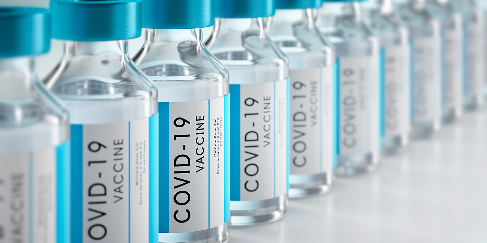
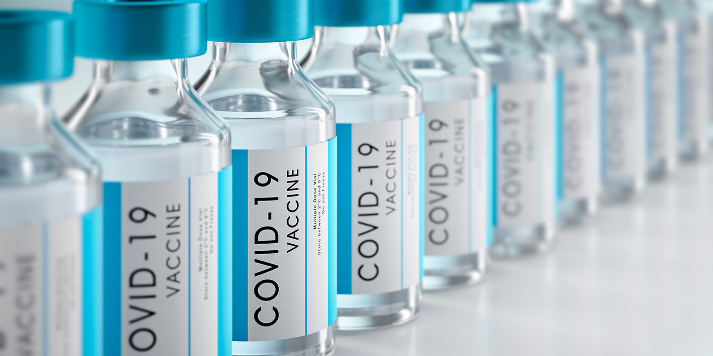
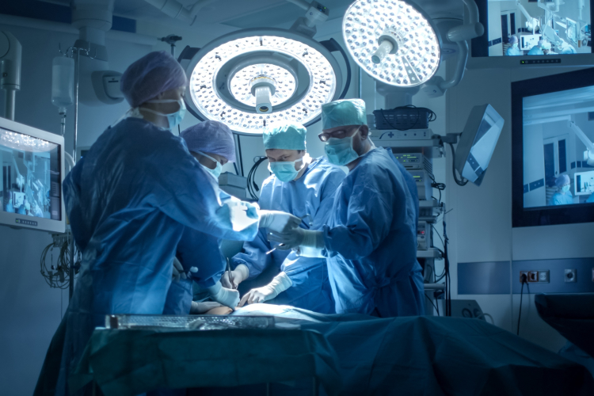
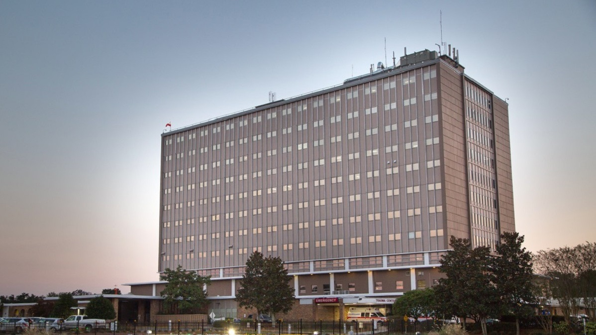

"La primera semana de Abril del 2021, el Hospital Metropolitano 506 ha colocado 500.000 dosis de la Vacuna Pfizer."
Leer más

|
LO MÁS DESTACADO |
||
|

"La primera semana de Abril del 2021, el Hospital Metropolitano 506 ha colocado 500.000 dosis de la Vacuna Pfizer." Leer más
|
"El Hospital, la madrugada del domingo 19 de Abril recibió un herido de bala en la Leon XIII, luego de un tiroteo en las afueras de un Condominio." Leer más
|

"A medida que las instalaciones de atención medica están al 100 %, se reanudan las operaciones que se vieron en pausa debido al COVID-19." Leer más
|
HISTORIA |
"El Hospital Metropolitano 506 cuenta con Tecnología de punta para las diferentes especialidades que ofrece,acérquese,conozcanos y utilice de nuestros servicios." "Buena parte de estos logros son consecuencia directa de la expansión y globalización de la información, que hoy hacen posibles sofisticadas computadoras y su extraordinaria red de interconexión rápida, Internet, que al salvar tiempo y distancias, permiten disponer de información inmediata y actualizada. Sin embargo, este progreso también ha devenido como bumerán, al provocar cambios en la atención del paciente, que hoy servida por múltiples especialistas e instituciones dedicadas al cuidado de la salud, su carácter personal e íntimo, resulta por el contrario, impersonal y fragmentado. Estos cambios también han traído como consecuencia la pérdida del liderazgo del médico de cabecera o médico clínico y el deterioro significativo de la que ha sido piedra angular del acto médico, la relación médico-paciente; Nuestras reflexiones acerca de las modificaciones sufridas en la actividad profesional, nos llevan a considerar la menor importancia otorgada por las nuevas generaciones médicas, a la historia clínica y a la relación médico-paciente, en buena parte hoy subestimadas y substituidas para darle hegemonía a las innovaciones tecnológicas." |